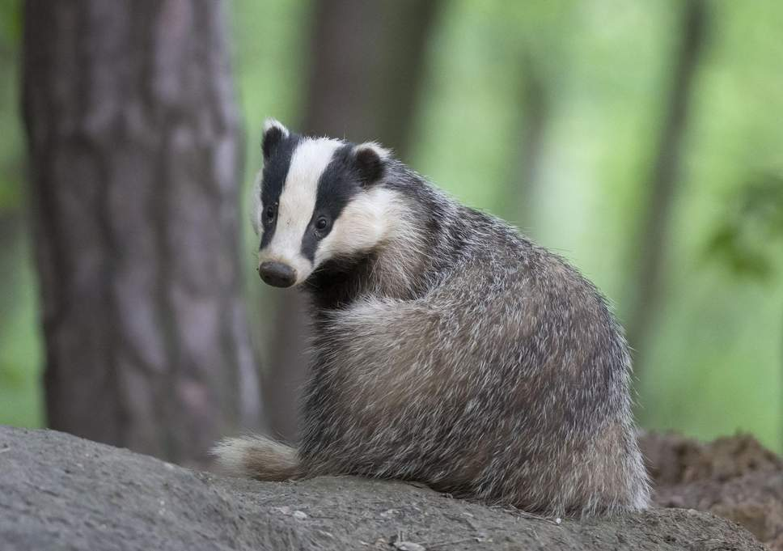

Badgers are short-legged omnivores in the families Mustelidae (which also includes the otters, polecats, weasels, and wolverines), and Mephitidae (which also includes the skunks). They are not a natural taxonomic grouping, but are united by possession of a squat body adapted for fossorial activity. All belong to the caniform suborder of carnivoran mammals. The 11 species of mustelid badgers are grouped in four subfamilies: Melinae (4 species, including the European badger), Helictidinae (5 species of ferret-badger), Mellivorinae (the honey badger or ratel), and Taxideinae (the American badger); the respective genera are Arctonyx, Meles, Melogale, Mellivora and Taxidea. Badgers include the most basal mustelids; the American badger is the most basal of all, followed successively by the ratel and Melinae; the estimated split dates are about 17.8, 15.5 and 14.8 million years ago, respectively. The two species of Asiatic stink badgers of the genus Mydaus were formerly included within Melinae (and thus Mustelidae), but more recent genetic evidence indicates these are actually members of the skunk family.
